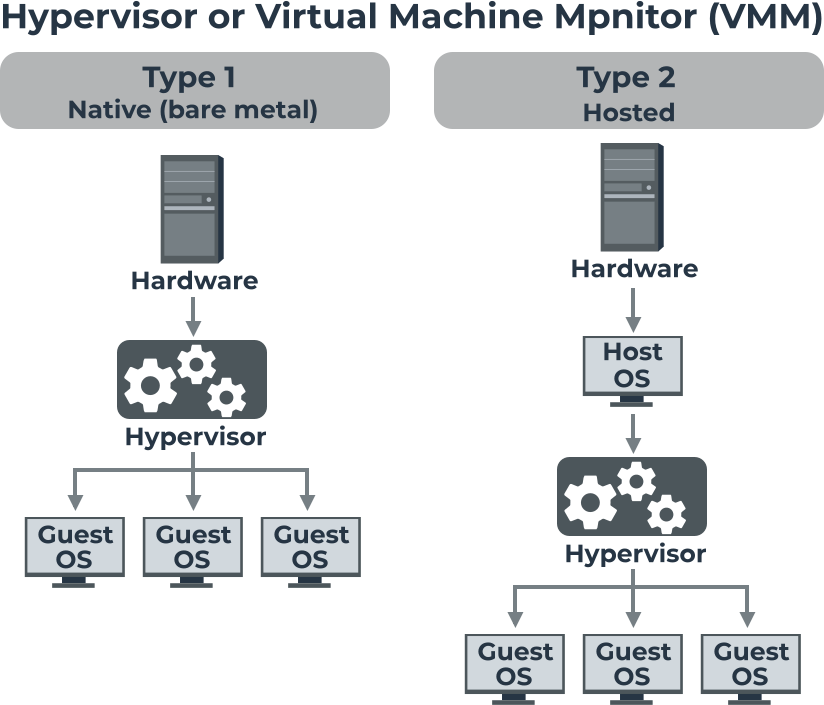
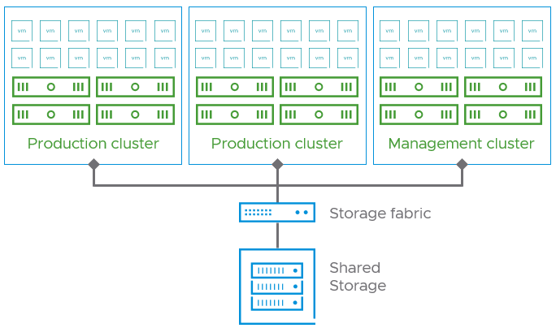

🐳 Virtualisierung & Docker-Grundlagen
Typ-1- vs. Typ-2-Hypervisor, der grundlegende Unterschied zwischen virtuellen Maschinen und Containern, sowie die Kernbegriffe von Docker.
📺 Vertiefung: Virtuelle Maschinen vs Container / Docker (The Morpheus Tutorials)
Drei Wege, Software isoliert laufen zu lassen
i
Bare Metal ist eine Wohnung ganz für dich allein. Eine VM ist ein
Mehrfamilienhaus, in dem jede Wohnung ihre eigene komplette
Infrastruktur (Strom, Wasser, Heizung) hat. Ein Container ist
eine WG: alle teilen sich Küche und Bad (den Kernel), haben aber
ihr eigenes abschliessbares Zimmer.
i
| Bare Metal | Virtuelle Maschine | Container | |
|---|---|---|---|
| Eigenes Betriebssystem | Ja (das einzige) | Ja, pro VM eines | Nein - Kernel wird geteilt |
| Startzeit | Minuten (Boot) | Minuten | Sekunden oder schneller |
| Ressourcenbedarf | Volle Hardware | Hoch (GB pro VM) | Niedrig (MB pro Container) |
| Isolation | Physisch komplett | Sehr stark (Hardware-Ebene) | Gut, aber schwächer (geteilter Kernel) |
Virtualisierung: Typ 1 vs. Typ 2 Hypervisor

| Typ 1 (Native/Bare-Metal) | Typ 2 (Hosted) | |
|---|---|---|
| Läuft auf | Direkt auf der Hardware | Als Anwendung im Host-Betriebssystem |
| Beispiele | VMware ESXi, Hyper-V (Server), Citrix XenServer | VirtualBox, VMware Workstation/Fusion, Parallels |
| Typischer Einsatz | Produktionsserver, Rechenzentrum | Entwickler-/Testumgebung auf Desktop/Laptop |
| Performance/Sicherheit | Besser (kein zusätzliches OS als Overhead) | Etwas geringer, dafür einfacher einzurichten |
Virtuelle Maschinen vs. Container: der grosse Unterschied
i
Der wichtigste Satz dieses Moduls: ein Container ist KEINE kleine
virtuelle Maschine - er ist ein isolierter Prozess, der sich den
Kernel des Host-Betriebssystems mit allen anderen Containern
teilt.
i

Bei einer VM virtualisiert der Hypervisor komplette Hardware - jede VM bringt ihr eigenes Betriebssystem inkl. eigenem Kernel mit. Bei Containern übernimmt eine Container-Engine (z.B. Docker) die Isolation auf Prozessebene (via Linux-Namespaces & Cgroups bzw. Windows Containers) - alle Container auf einem Host teilen sich denselben Kernel.
Praktische Konsequenz: ein Linux-Container braucht einen laufenden Linux-Kernel. Unter Windows läuft deshalb im Hintergrund eine leichte Linux-Umgebung (z.B. WSL2), damit Linux-Container überhaupt funktionieren - eine echte VM wäre davon unabhängig, da sie ihr eigenes Betriebssystem mitbringt.
Was ist Docker genau?
Docker ist die bekannteste Container-Engine (nicht die einzige - andere: Podman, containerd) mit vier Kernbegriffen:
- Image: ein unveränderliches, geschichtetes Dateisystem-Template mit allem, was eine Anwendung braucht - der "Bauplan".
- Container: eine laufende Instanz eines Images - das tatsächlich "gebaute Exemplar". Mehrere Container können vom selben Image gestartet werden.
- Dockerfile: eine Textdatei mit der Bauanleitung, wie ein Image Schritt für Schritt entsteht.
- Registry (z.B. Docker Hub): ein zentraler Speicherort zum Hoch-/Herunterladen fertiger Images.
Ein minimales Beispiel-Dockerfile:
FROM node:20 COPY . /app WORKDIR /app RUN npm install CMD ["node", "server.js"]
Praxisbeispiel: Immich mit Docker Compose betreiben
i
Immich ist eine selbst gehostete Foto-/Video-Backup-Lösung (Alternative
zu Google Fotos/iCloud). Sie besteht nicht aus einem einzigen Container,
sondern aus mehreren zusammenspielenden Diensten (Server, KI-Modell für
Gesichts-/Objekterkennung, Datenbank, Cache) - genau dafür gibt es
Docker Compose: eine YAML-Datei beschreibt alle Container
und ihr Zusammenspiel auf einmal, statt jeden einzeln mit langen
docker run-Befehlen zu starten.
i
docker run-Befehlen zu starten.
Vereinfachtes docker-compose.yml:
services:
immich-server:
image: ghcr.io/immich-app/immich-server:release
volumes:
- ${UPLOAD_LOCATION}:/usr/src/app/upload
env_file:
- .env
ports:
- "2283:2283"
depends_on:
- redis
- database
restart: unless-stopped
immich-machine-learning:
image: ghcr.io/immich-app/immich-machine-learning:release
volumes:
- model-cache:/cache
restart: unless-stopped
redis:
image: redis:6.2-alpine
restart: unless-stopped
database:
image: tensorchord/pgvecto-rs:pg14-v0.2.0
environment:
POSTGRES_PASSWORD: ${DB_PASSWORD}
POSTGRES_USER: ${DB_USERNAME}
POSTGRES_DB: ${DB_DATABASE_NAME}
volumes:
- pgdata:/var/lib/postgresql/data
restart: unless-stopped
volumes:
model-cache:
pgdata:
Damit lässt sich der gesamte Stack mit drei Befehlen verwalten:
| Befehl | Wirkung |
|---|---|
docker compose up -d |
Run - erstellt und startet alle Container im Hintergrund (-d = detached). Fehlende Images werden vorher automatisch heruntergeladen. |
docker compose pull && docker compose up -d |
Update - lädt neue Image-Versionen herunter und ersetzt die laufenden Container damit. Die Daten in pgdata und dem Upload-Ordner bleiben erhalten, da Volumes unabhängig vom Container-Lebenszyklus existieren. |
docker compose down |
Down - stoppt und entfernt alle Container sowie das gemeinsame Netzwerk. Die Volumes (und damit Fotos/Datenbank) bleiben standardmässig bestehen; erst docker compose down -v löscht auch diese. |
Wann VM, wann Container?
| Situation | Empfehlung |
|---|---|
| Komplett anderes Betriebssystem als der Host nötig | VM |
| Sehr strikte Isolation zwischen fremden Mandanten nötig | VM (oder VM + Container kombiniert) |
| Viele gleichartige Instanzen schnell hoch-/runterskalieren | Container |
| Microservices-Architektur | Container |
| Alte Anwendung, die ein spezielles altes OS braucht | VM |
Praxisbeispiel: Produktions- und Management-Cluster trennen
i
Ein reales Muster aus dem Rechenzentrums-Alltag: die
Verwaltungswerkzeuge für die gesamte Virtualisierungsumgebung
(z.B. vCenter) laufen bewusst NICHT auf denselben Servern wie
die eigentlichen Produktions-VMs - fällt ein Produktions-Cluster
aus, bleibt die Verwaltung trotzdem erreichbar.
i
In grösseren Typ-1-Hypervisor-Umgebungen (z.B. VMware) werden Produktions- und Verwaltungsaufgaben oft bewusst auf getrennte Cluster verteilt, die sich denselben gemeinsamen Storage teilen:
